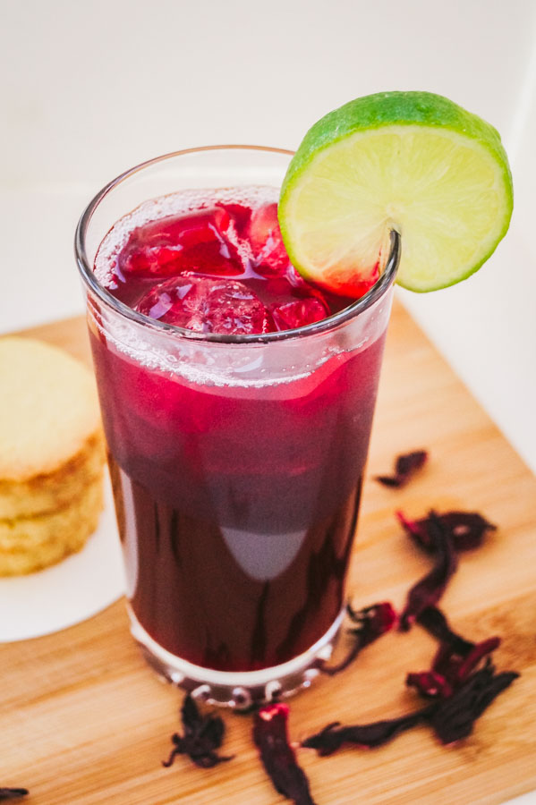

Zobo

Description
Zobo also known as Sorrel drink or hibiscus drink is refreshing beverage made from the Roselle plant (Hibiscus Sabdariffa).
The flowers of the Roselle plant are dried and steeped with added spices for a unique, refreshing flavour.
Ingredients
- Zobo leaves -Hibiscus leave also known as Sorrel leaves
- Fresh whole pineapple or 1 litre 100% percent Pineapple juice
- 1 Orange (cut up)
- 1 Ginger (grated)
- Sugar (optional)
- Cucumber and orange to garnish
Steps
- Wash zobo leaves with warm water.
- Add the zobo leaves in a pot and pour in 2.5 litres of water.
- Add in the grated ginger, orange cut up and pineapple cut up.
- Cover pot and leave to boil for 30 minutes.
- Add sugar, give it a good stir and leave to cool.
- Sieve through a fine mesh and chill in the fridge.
- Serve and garnish with orange and cucumber (optional).